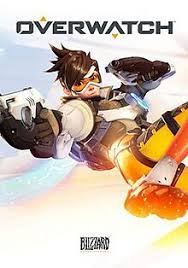
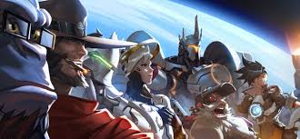

Sellele lehele, igaüks kes ennast kirja on pannud, kirjutab ühe lehe sektsiooni
oma lemmikmängust. Mida selle mängu kohta kirjutada:
Mängu nimi
Platvorm, väljalaskeaeg, muu info, lühike sisututvustus
Title screeni pilt
paragrahv millest mängu story räägib (pane pilte vastavalt storyle juurde)
paragrahv mis räägib mängu gameplayst (pane pilte vastavalt gameplay kirjeldusele juurde)
Mängu jaoks erinevaid linke
Iga õpilase sektsioon kasutab eraldi stiilifaili, stiili saab juurde panna id-ga
Iga 10 minuti tagant teevad kõik uue commiti.
Kirjuta omasõnadega arvustus oma valitud mängust.(platvormivõrdlus kirjutada ka sisse, kui mäng on multiplat)
Embeddi kommentaarideta youtubi video mängust
Aleksandr Aleksejev
OVERWATCH
Platvorm: PC, Xbox One, PlayStation 4
Väljalaskeaeg:2016. aastal
Lühike sisututvustus: OverWatch on mitme mängijaga esimese isiku tulistamisvideomäng,
mille Blizzard Entertainment töötas välja .

Lähitulevikus on inimeste ja masinate vahel toimunud ülemaailmne konflikt - omnics
(teatud tehisintellektiga robotite mängunimi) ülestõus.
Kriisi ärahoidmiseks ja rahu loomiseks planeedil asutati rahvusvaheline kangelaste eriüksus.

Overwatchis võitlevad kaks kuuest mängijast koosnevat meeskonda keerulisel kaardil;
enne iga lahingut valivad mängijad oma kangelase tegelased
- erinevatel kangelastel on erinevad omadused ja oskused,
Mäng Overwatch mulle meeldib, see on väga mugav pildistamine ja kena graafika,
kuid enne mängu põhiarendaja lahkumist oli parem, sai asju tasuta,
kuid nüüd on need 40 eurot tükk.Erinevaid platvorme on selles mängus raske võrrelda,
sest kõik mängivad erineval ja mäng on igal pool veidi erinev